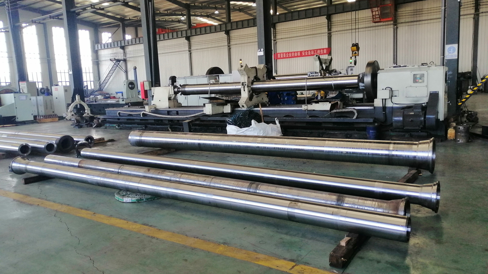

When a new pipe mould is used for the first time, grinding and spotting should be used to relieve and eliminate the residual stress generated in the manufacturing process of the pipe mould (forging, heat treatment residual stress and surface cold work hardening stress caused by machining and cutting, stress concentration points between valleys and peaks of roughness, etc.).
Ensure that the hardness value of the pipe mould is within the specified allowable value (≥230), and avoid plastic deformation or early cracking due to thermal alternating internal stress during the work of the pipe mould.

Ensure that no extension cracks on pipe mould body, smooth transition curve, and no stress concentration points to avoid safety accidents such as scrapped pipe moulds caused by thermal stress release and explosion.
Ensure the size, shape and position tolerance requirements of the pipe mould to avoid eccentricity and vibration during work.
Before using the pipe mould, it needs to stand for more than 8 hours in an environment above 20 °C to ensure that the temperature of the pipe moud is uniform before it can be used on the machine.
Ensure that the inner and outer surfaces of the pipe mould are clean, avoid scratches on the pipe mould and regularly clean the scale on the outer surface of the pipe mould to ensure that the surface of the pipe mould has good heat dissipation conditions.
Make sure that the cooling system of the centrifuge is turned on, check whether the circulating water flow is normal, and avoid the lack of water in the centrifuge or insufficient circulating water, so that the pipe mould cannot be cooled, resulting in destructive phenomena such as cracking, deformation, and bursting of the pipe mould.
Pay attention to check the surface wear and finish of the tug of the centrifuge unit to prevent damage to the tug and the surface of the pipe mould raceway during operation, which is easy to cause hard surface damage or fall off, which will seriously affect the service life of the pipe mould.